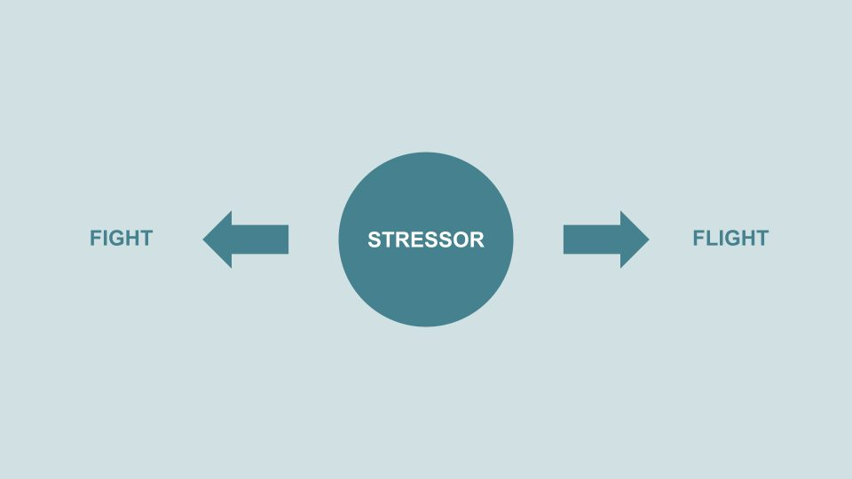
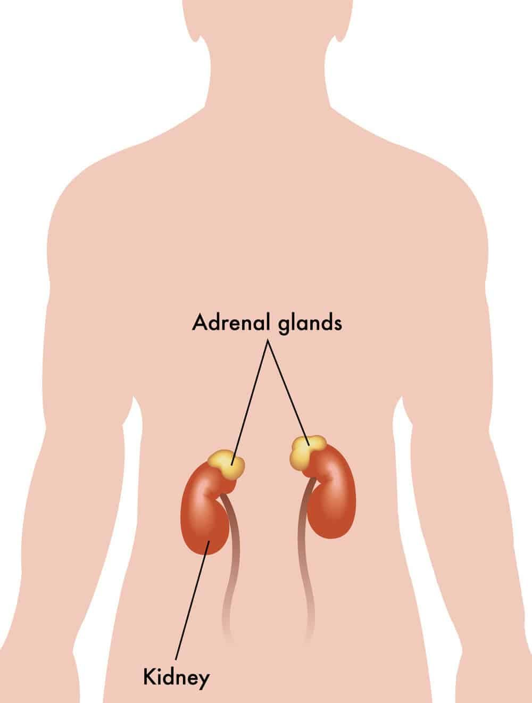

Writing / Human biology
Understanding stress: a survival mechanism and a health risk
Stress is a necessary and useful life mechanism. While this may sound contradictory, it’s crucial for survival.
In primitive conditions, humans, like other animals, faced dangerous situations with two options: fight or flight. Survival depended on these responses.

During stress, the brain activates mechanisms that signal the adrenal glands. These glands release cortisol, which promotes glucose release into the bloodstream — a vital energy source for “fight or flight.”
Adrenaline and noradrenaline are also released. Adrenaline increases heart rate and blood flow, while noradrenaline constricts blood vessels, diverting blood to the brain and muscles, enhancing performance. Breathing rate increases, and pupils dilate for better vision.

In short, under stress, blood sugar and energy rise, blood circulation and pressure accelerate, and physical performance can increase significantly. This is a natural “doping” mechanism inherited from our ancestors.
While beneficial in short bursts, chronic stress is harmful. Modern life often creates a constant state of perceived danger, making stress a permanent condition.
Prolonged stress disrupts the body’s helpful mechanisms, leading to various diseases. High cortisol levels can cause diabetes and weaken the immune system, increasing the risk of infections, cancer, and autoimmune diseases.
Adrenaline and noradrenaline can lead to hypertension and atherosclerosis, increasing the risk of heart attack, stroke, and dementia. Stress hormones also disrupt sleep, causing insomnia and fatigue.
Chronic stress has far-reaching negative effects. It’s crucial to identify and manage stress triggers. Self-understanding and stress-relieving activities are essential.
How do we prevent chronic stress?
Human biology, programmed for “fight or flight,” struggles to adapt to modern socio-political factors like income insecurity, job loss, and debt. These create persistent stress, difficult to escape.
This chronic stress of modern life overwhelms our biology. Our bodies struggle to cope with the resulting diseases.
Perhaps a collective effort is needed to address this “pandemic” of cortisol. Psychological and socio-political approaches may offer solutions.
Reference: Lehninger, Principles of Biochemistry.
Written by Besir Zeneli, BSc in Biological Sciences.